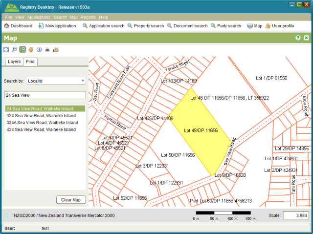

You can use the Find tab to perform spatial searches to quickly locate parcels or other geospatial features in the map. To use the Find, select the type of geospatial feature to search in the Search By drop down and start typing in the field provided. Once you have entered enough characters (between 1 and 3), the search will begin listing values that match the search criteria. To view one of the results, double click the result value in the result list and the map will zoom to the location of the selected feature and highlight it.

SOLA Map Viewer Find Court Grant
To remove the highlight from your selected feature on the map, click the Clear Map button.
The spatial searches available in Registry are
|
Enter the house number, road name or general locality name to locate a parcel. This search will only work with parcels that have a spatial definition and a locality. Requires at least 3 characters to be entered. |
|
Enter the appellation for a parcel (e.g. parcel/lot and/or plan number) to locate a parcel. This search will only work with parcels that have a spatial definition. Requires at least 3 characters to be entered. |
|
Enter the title / folio reference for a property to locate the parcel for the property. This search will only work if the property is linked to a parcel with a spatial definition. Requires at least 3 characters to be entered. |
|
Enter the name of a current property owner to locate a parcel for the property. This search will only work if the property is linked to a parcel with a spatial definition. Requires at least 3 characters to be entered. |
Note that the spatial searches can be reconfigured to match those required by the land administration agency.